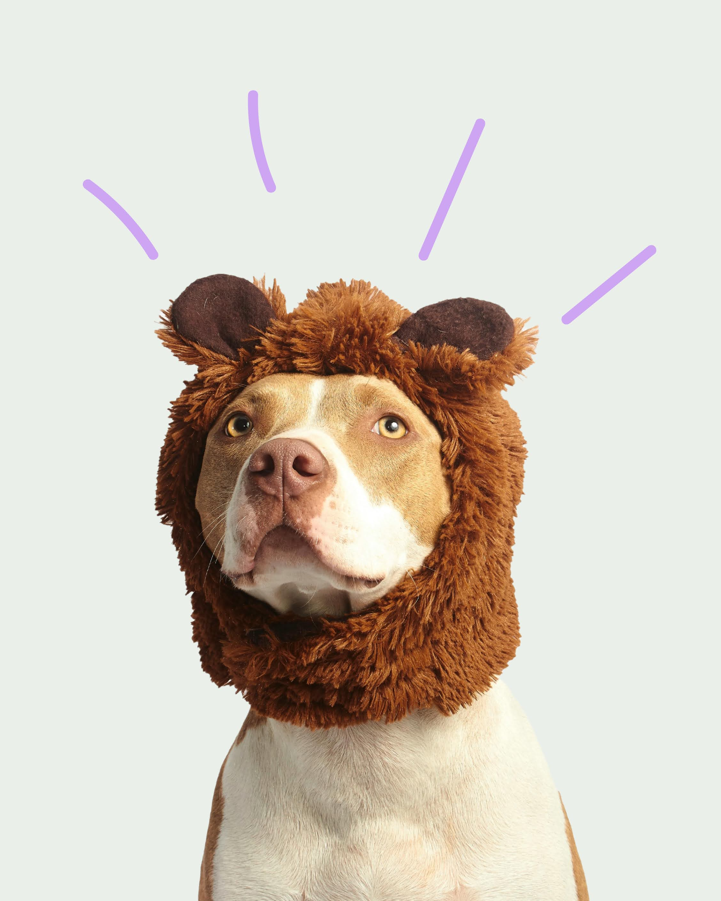
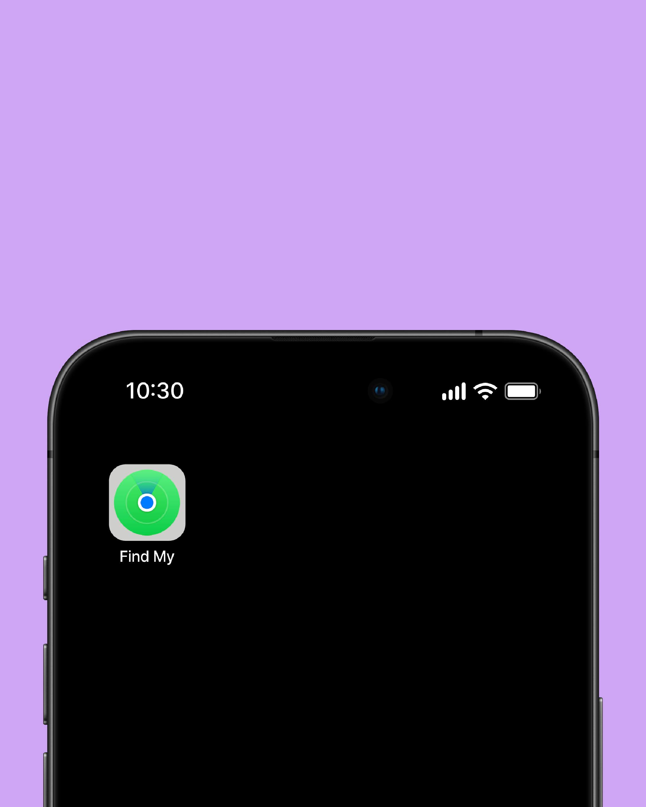
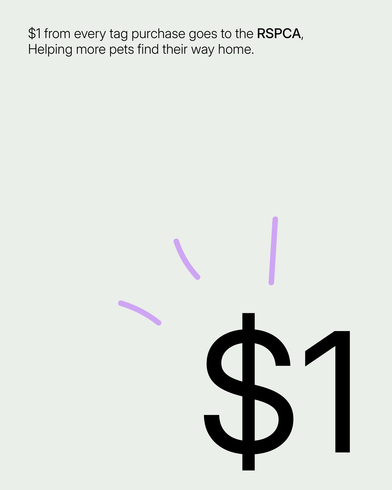
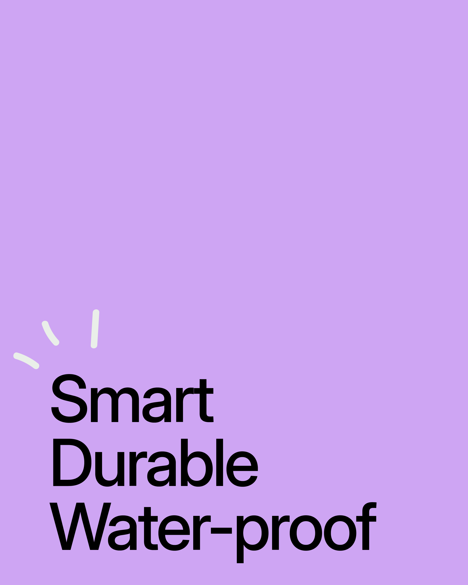

Losing a pet is
every owner’s nightmare.
Posters, Facebook posts, microchips, none of it feels fast enough
when your dog’s out there somewhere. PetFindr (founded by Laura Rust)
decided to fix that. They built smart tags that do the talking, one quick scan and the finder
knows exactly who to call. No apps, no passwords, just a straight line home.
We took that same idea, fast, real, and turned it into a brand. Clean shapes + calm colors + type that feels like it actually cares.



